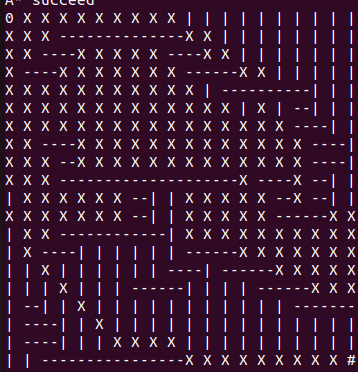
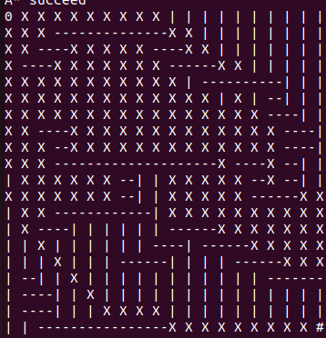

Avancement
Début du projet
30/01/2023
RG2A
Soutenance 1:
15/02/2023
Lors de la première soutenance, nous avons implémenté l'algorithme de Boids, le pathfinding, un paint et une interface graphique.
L'implémentation de l'algorithme de Boids
Comment les boids sont-ils repr ́esent ́es dans notre implémentation ?
Il n’existe pas de meilleure approche pour représenter un boid, mais dans notre cas, nous avons utilisé des triangles isocèles. Cela a été fait non seulement pour des raisons esthétiques mais aussi pour rendre l’algorithme plus simple à mettre en œuvre et à comprendre.
Pourquoi un triangle ?
Nous pouvons mettre en œuvre le comportement souhaité en déterminant si un autre point se trouve sur le côté gauche ou droit de notre boid en utilisant les deux points qui constituent la base du triangle. L’autre point de notre triangle d ́efinira la largeur du champ de vision du boid, et plus le champ de vision est large, plus la hauteur de notre boid doit être grande.
Quels sont les principaux comportements des boids ?
Il y a trois règles :
L’alignement : pour rester regroupés les boids essaient de
se suivre sur le même chemin.
La séparation : les boids évitent autant que possible de se
coller l’un à l’autre.
La cohésion : les boids ont tendance à se regrouper entre
eux.

Implémentation Path finding
Pour l’implementation de l’algorithme de pathfinding nous avons d’abord choisis d’implementer celui de A* qui correspond au mieux a nos demande pour un algorithme de pathfinding le plus general possible. En effet celui-ci recherche le chemins le plus cours entre un point A et un point B en considerant des obstacles. Pour ce faire a cette premiere soutenance l’implementation de cette algortihme et faite sur vecteur de int avec comme valeur possible 0 pour un emplacement libre et 1 pour un emplacement ocuppee. L’algorithme ce base sur une structure fifo avec ordre de prioritee bas ́ee sur une valeur heuristic. La valeur heuristice se calcule pour chaque noeud u par heuristic = cout + distance(u,destination), le cout correspond au deplacement total depuis le point de depart.
Ici le point de départ (0) et le point d'arrivé (#) ainsi les obstacles (-), les positions possible( | ) et le chemin trouvé (X).
 
Ici l'algorithme renvoie tous les chemins dont il est passé, donc y compris le chemin le plus court.
Représentation graphique
Paint est la première version de l’implémentation des
obstacles. Notre Paint fonctionne sur le même principe que
le vrai Paint, dessiner sur un plan. A la diff ́erence que
notre version dessine des rectangles noir en guise
d’obstacles sauf sur la cible rouge positionnée de façon
aléatoire lorsque l’on presse une touche du clavier.
Le Paint s’activera lorsque le checkbutton obstacle(de
l’interface graphique) est activé. Lorsque le click gauche
est pressé, et que le curseur de la souris n’est pas en
collision avec la cible rouge, un rectangle noir de
dimension 10x10 est dessiner sur l’arène (en guise
d’obstacle). Le click droit à la même fonctionnalité que le
click gauche mais celui-ci efface seulement les obstacles.
Interface graphique
L’interface graphique est composé de 3 parties :
- Les paramètres généraux (main set up)
- Les paramètres de l’équipe 1 (team 1)
- Les paramètres de l’équipe 2 (team 2)